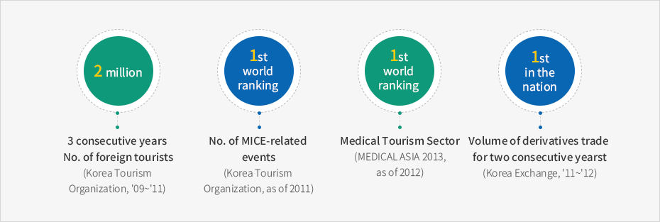
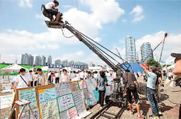
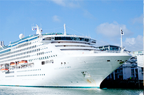
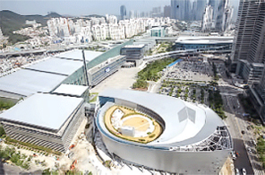

Knowledge Service Infrastructure
- Home
- Strategic Industries
- Knowledge Service Infrastructure
Overview
Busan, which is the largest movie and visual city in Asia, the representative tourism city in Korea and a specialized financial center located near the world’s largest shipbuilding yard, is intensively promoting the infrastructure of the knowledge service industry. This will serve as the base for next-generation growth engine and foreign investment promotion.


2 million : 3 consecutive years No. of foreign tourists (Korea Tourism Organization, '09~'11)
1st world ranking : No. of MICE-related events (Korea Tourism Organization, as of 2011),
1st world ranking : Medical Tourism Sector (MEDICAL ASIA 2013, as of 2012),
1st in the nation : Volume of derivatives trade for two consecutive years, (Korea Exchange, '11~'12)

Industries
The mecca of marine & specialized financial derivatives and production of movies and visuals
Build a shipbuilding and specialized financial center
- Promotion of Busan International Finance Center’s multipurpose development step-2 project (2014–2017): 182,000 ㎡ of land, 36-story building, 49-story building (2 buildings), office facilities (officetel), accommodation facilities (hotel), and shopping facilities
- Training of global financial experts: operation of the international finance training center, promotion of the establishment of a specialized graduate school of finance
Establish movie and visual infrastructure
- Build a global film studio (2013–2017) on 776,000 ㎡ of land around Dareumsan Mountain
- Establish an Asian movie school: expand the film studio (3F–4F from the ground), 1,700 ㎡ (August, 2015)
- Construct a visual industry center in Centum City (2010–2016) and the Busan Film Experience Museum (2008–2016)
- Operate a fund (KRW 100 billion) to support movie planning, development, and production
- Support the accommodations of movie (drama) production teams, movie planning & development and production & shooting and operate a visual venture center
Promote the cultural contents industry that can stimulate the market
Revitalize the cultural contents industry
- Build a local SW convergence cluster and establish a contents convergence R&D center (2014–2018)
- Support the Contents Korea Lab Busan (ICT convergence-type startups, artwork creation)
- Open a mobile game center (2015)
- Support the development of cultural contents star projects
Increase the status of Busan as a tourism and convention city
Revitalize the cruise tourism and medical tourism
- Attract international cruise ships to Busan home port and host the International Cruise Fair in Busan (2015)
- Develop and operate coastal cruise tourism packages: operate cruise ships in Yonghoman Bay (3 ships since October, 2014)
- Execute familiarization tour by inviting people involved in foreign medical tourism and operate volunteers for medical tourism interpretation(14 languages, 370 volunteers)
- Build a stay-type medical tourism cluster (2014–2018)
Promote advancement of the MICE industry
- Site development for BEXCO-affiliated facilities (2013–2017): exhibition and convention facilities, hotel (accommodation) facilities, etc., 140,000 ㎡ (6 underground floors / 37 floors on the ground)
Expand global competitive tourism infrastructure
- Establish a Dongbusan Mountain tourism complex (2015–2017), attract investment (60% compared to area) and complete the construction of the site (2015)
- Haeundae tourist resort (2006–2018): 101 floors
- Build a Busan green railway (2014–2017): Donghae Nambu Line waste railway trail (9.8 ㎞), bike roads, etc.
- Construct an observatory tower at Hwangnyeongsan Mountain (2014–2017): 1,000 ㎡
-

Filming the movie, Gukjesijang
-

Promote the cruise tourism
-

Advancement of MICE industry